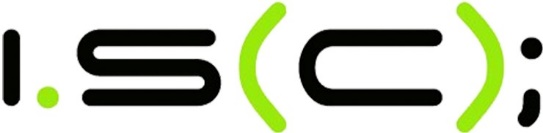
INGENIERÍA EN SISTEMAS COMPUTACIONALESvite preview).
Se desarrolló tektoni-web, el frontend de una aplicación de control de avance de obra, como proyecto React independiente que consume la biblioteca tektoni-ui instalada desde npm. La aplicación gestiona alertas de obra y proyectos, con datos servidos por una capa de servicios que simula latencia y fallos de red para demostrar todos los estados.
El objetivo fue transformar la biblioteca del Design System en un producto real, aplicando:
useMemo, useCallback, useRef, React.memo).tektoni-ui@1.0.0.
La biblioteca se publicó en npm como tektoni-ui (versión 1.0.0, etiqueta latest)
y el proyecto la instala como dependencia externa. No se copiaron archivos fuente: los componentes se
importan desde la API pública del paquete y se estilizan con sus tokens.
npm install tektoni-ui
# package.json
"dependencies": { "tektoni-ui": "^1.0.0" }
# src/main.tsx
import 'tektoni-ui/styles.css'; // tokens + estilos compilados
import './index.css';La aplicación usa los tokens del Design System mediante variables CSS que expone la librería
(var(--color-primary), var(--color-carbon), var(--font-display), var(--radius-md), var(--shadow-soft)).
| Componente de tektoni-ui | Uso en la aplicación |
|---|---|
Navbar | Cabecera de cada vista con el h1 y acciones. |
Button | Acciones, envío de formularios, paginación, reintentos y confirmaciones. |
Input | Campo de título del formulario de alertas. |
Select | Proyecto, severidad, filtro de severidad y estado de cada proyecto. |
SearchBar | Búsqueda con limpieza y foco visible. |
Tabs | Filtros por estado (Todas / Abiertas / Reconocidas). |
Switch | Modo de prueba (forzar errores de red). |
Alert | Avisos de severidad, errores y estado offline. |
Toast + useToast | Feedback de éxito y error de cada mutación. |
Spinner | Carga de página, estados de carga y pending. |
Icon | Iconografía de línea (búsqueda, cierre, alertas). |
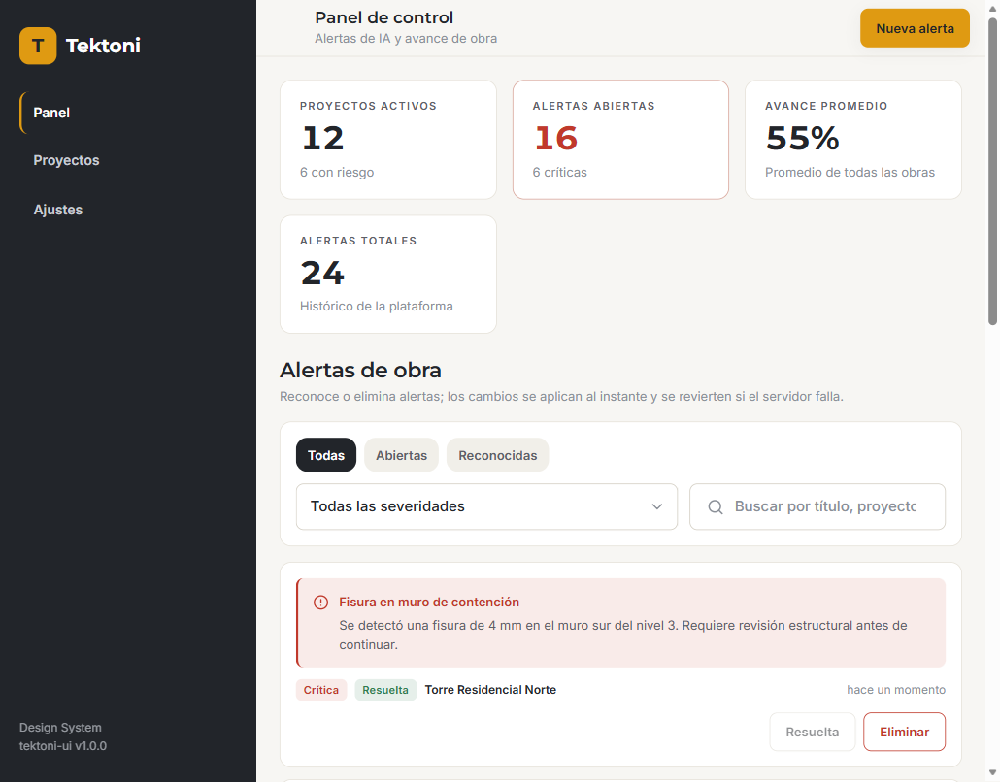
tektoni-ui.La estructura separa claramente presentación, datos, formularios, tipos y configuración:
src/
├── components/
│ ├── layout/ AppShell, Sidebar, SkipLink, OfflineBanner
│ ├── ui/ Dialog, StateView, ProgressMeter, FieldError, Select (tipado)
│ ├── alerts/ AlertCard, AlertFeed, FilterBar, CreateAlertForm, diálogos
│ ├── projects/ ProjectRow, ProjectsTable, Pagination
│ ├── dashboard/ DashboardStats, KpiCard
│ └── a11y/ LiveAnnouncer (regiones aria-live)
├── pages/ DashboardPage, ProjectsPage, SettingsPage, NotFoundPage
├── hooks/ use-alerts, use-projects, use-stats, use-alert-filters, use-online-status
├── services/ api.ts (mock con latencia/fallos), db.ts (persistencia), fault.ts
├── schemas/ alert.ts (Zod + z.infer)
├── config/ query-client.ts (QueryClient)
├── lib/ query-keys.ts, format.ts, a11y.ts
├── providers/ AppProviders, QueryDevtools
├── types/ domain.ts
├── App.tsx rutas (React Router)
├── main.tsx entrada + registro del service worker
└── index.css estilos de la app con tokens del Design Systemservices/ y hooks/;
la validación en schemas/; la presentación en components/ y pages/.
Ningún componente de la app reimplementa los de la librería: los compone.
Todo el estado remoto se gestiona con TanStack Query. No se copian datos del servidor a
useState ni a contextos: la caché es la única fuente de verdad.
// src/config/query-client.ts
export const queryClient = new QueryClient({
defaultOptions: {
queries: {
staleTime: 30_000,
gcTime: 5 * 60_000,
refetchOnWindowFocus: false, // el panel se actualiza por invalidación
retry: (failureCount, error) =>
error instanceof ApiError && error.status >= 400 && error.status < 500
? false
: failureCount < 2,
},
mutations: { retry: 0 },
},
});
// src/lib/query-keys.ts — claves centralizadas y serializables
export const queryKeys = {
stats: ['stats'],
alerts: {
all: ['alerts'],
infinite: (filters) => ['alerts', 'infinite', filters],
},
projects: {
all: ['projects'],
page: (page, pageSize) => ['projects', 'page', page, pageSize],
},
};useQuery para indicadores (useStats) y proyectos (useProjects).useInfiniteQuery para el feed de alertas con paginación por cursor.useMutation para todas las escrituras, con invalidación explícita.isPending, isFetching, isError, error, refetch e isPending de mutación.import.meta.env.DEV y lazy().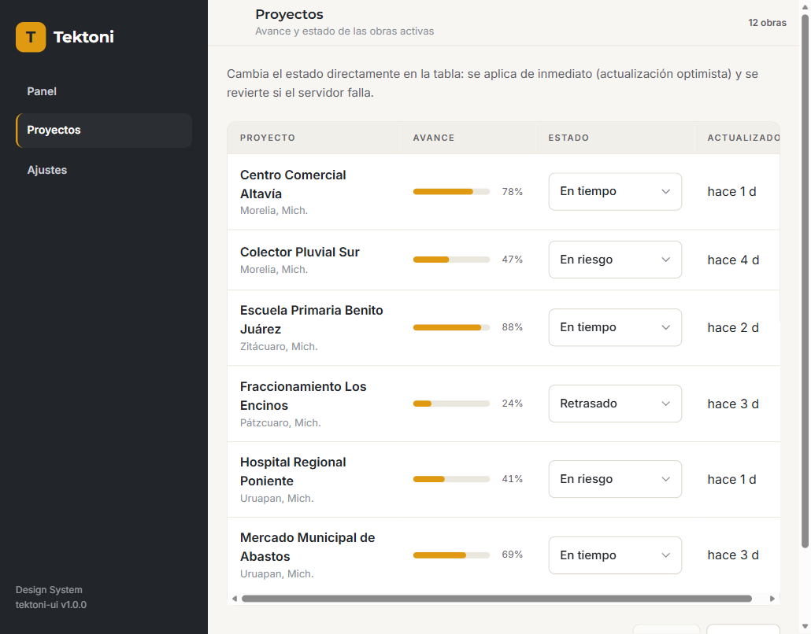
useQuery con placeholderData para mantener la página anterior mientras carga la siguiente.Se implementaron dos tipos de paginación:
useInfiniteQueryEl listado de alertas pagina por cursor (offset serializable) y usa select para derivar solo lo necesario:
export function useAlertsInfinite(filters: AlertFilters) {
return useInfiniteQuery({
queryKey: queryKeys.alerts.infinite(filters),
queryFn: ({ pageParam }) => fetchAlerts({ cursor: pageParam, ...filters }),
initialPageParam: null as string | null,
getNextPageParam: (lastPage) => lastPage.nextCursor,
select: (data) => ({
items: data.pages.flatMap((p) => p.items),
total: data.pages[0]?.total ?? 0,
}),
});
}El botón “Cargar más alertas” ejecuta fetchNextPage() y muestra el estado isFetchingNextPage; al final se anuncia “Mostrando X de Y alertas”.
La tabla usa useQuery con página y tamaño, y controles Anterior/Siguiente con una región role="status" aria-live="polite" que anuncia el cambio de página.
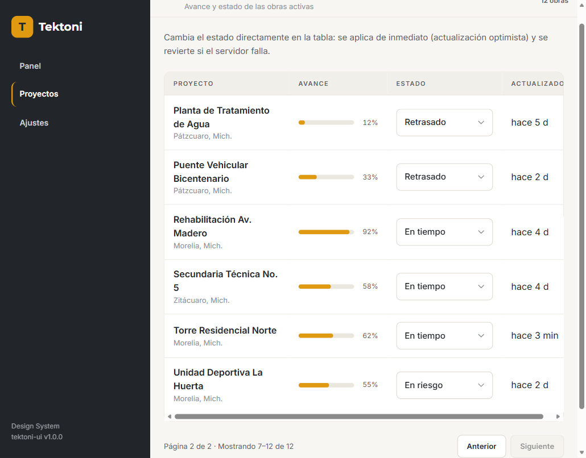
Se implementaron tres flujos optimistas con useMutation: crear, reconocer (actualizar) y eliminar. Todos siguen el mismo patrón:
queryClient.cancelQueries antes de tocar la caché (evita condiciones de carrera).getQueriesData.setQueriesData.onError restaurando el snapshot.invalidateQueries en onSettled para reconciliar con el servidor.aria-live.// src/hooks/use-alerts.ts (eliminar)
onMutate: async (id) => {
await queryClient.cancelQueries({ queryKey: queryKeys.alerts.all });
const previous = queryClient.getQueriesData({ queryKey: queryKeys.alerts.all });
queryClient.setQueriesData({ queryKey: queryKeys.alerts.all }, (old) => ({
...old,
pages: old.pages.map((page) => ({
...page,
items: page.items.filter((alert) => alert.id !== id),
total: Math.max(0, page.total - 1),
})),
}));
return { previous }; // contexto para restaurar
},
onError: (error, _id, context) => {
for (const [key, data] of context?.previous ?? []) {
queryClient.setQueryData(key, data); // rollback
}
toast.show({ tone: 'error', title: 'Error al eliminar', description: error.message });
announce('Error al eliminar la alerta.', 'assertive');
},
onSettled: () => {
queryClient.invalidateQueries({ queryKey: queryKeys.alerts.all });
queryClient.invalidateQueries({ queryKey: queryKeys.stats });
},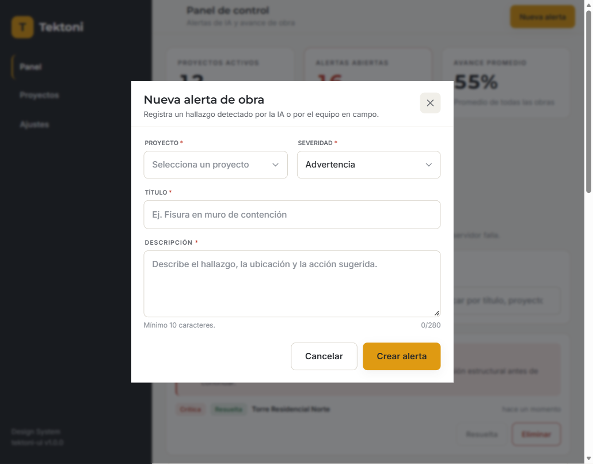
<dialog> con atrapado de foco.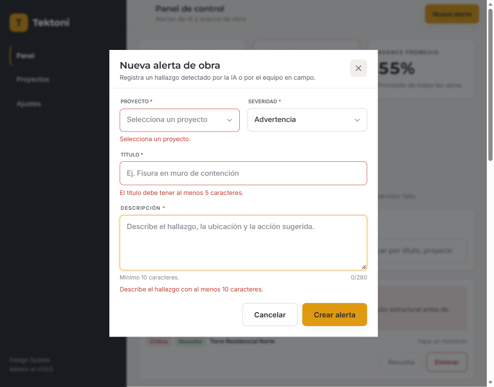
aria-invalid.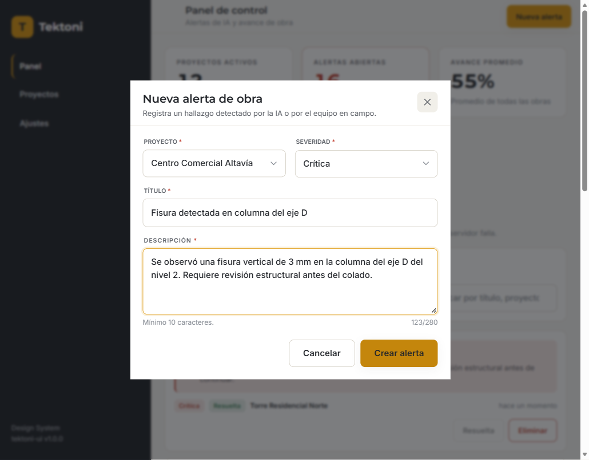
register en textarea y useWatch para el contador).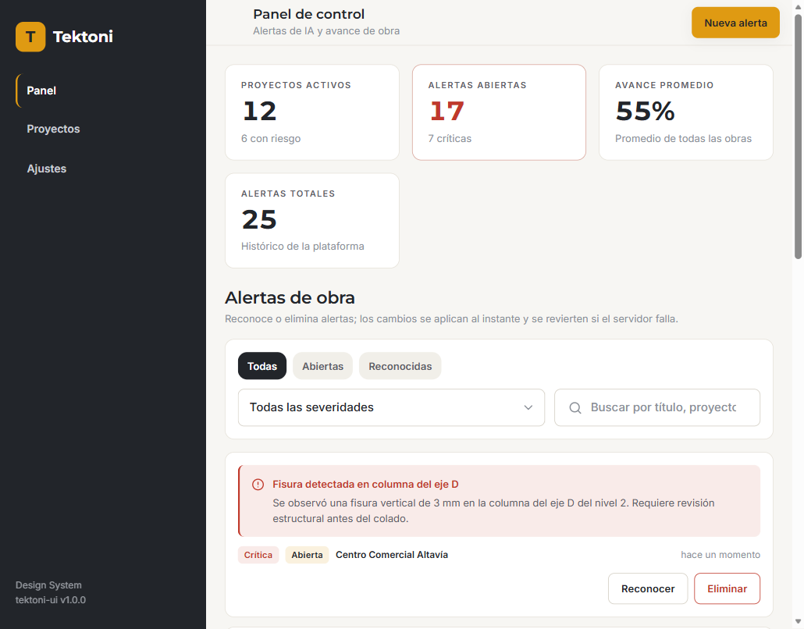
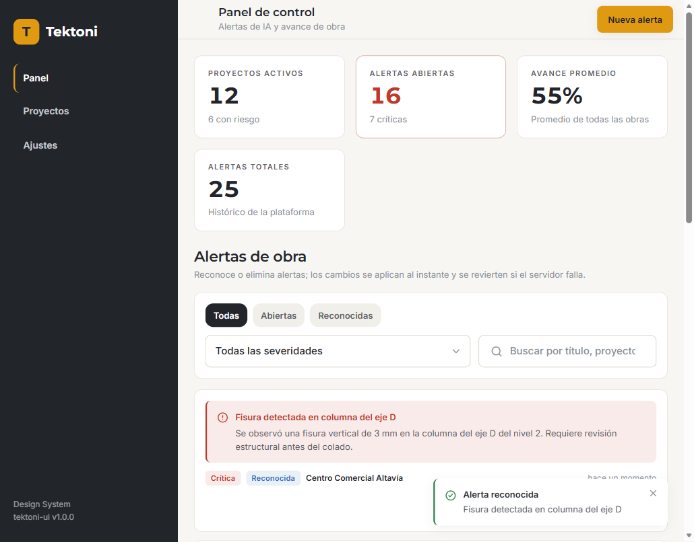
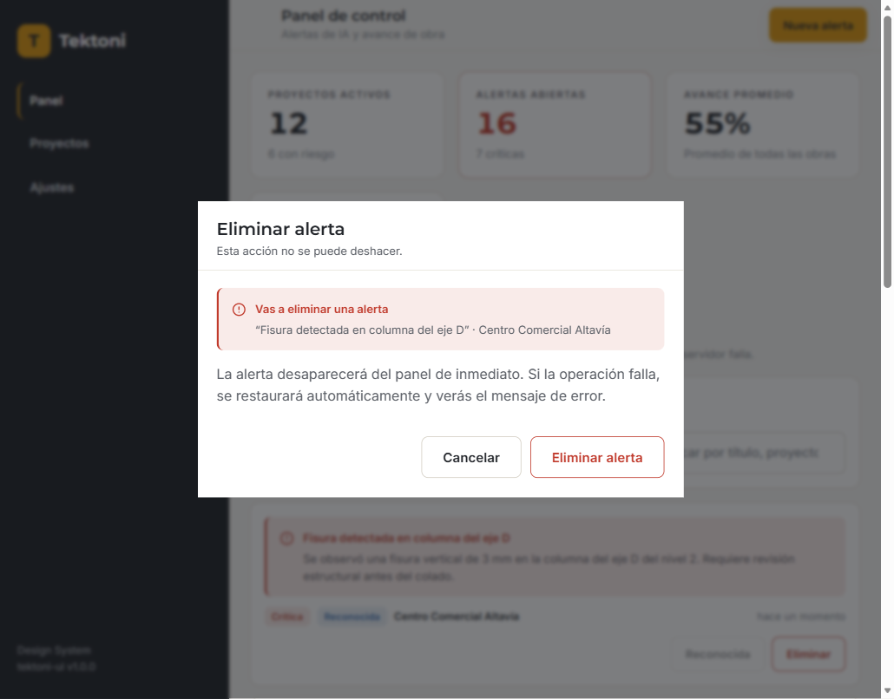
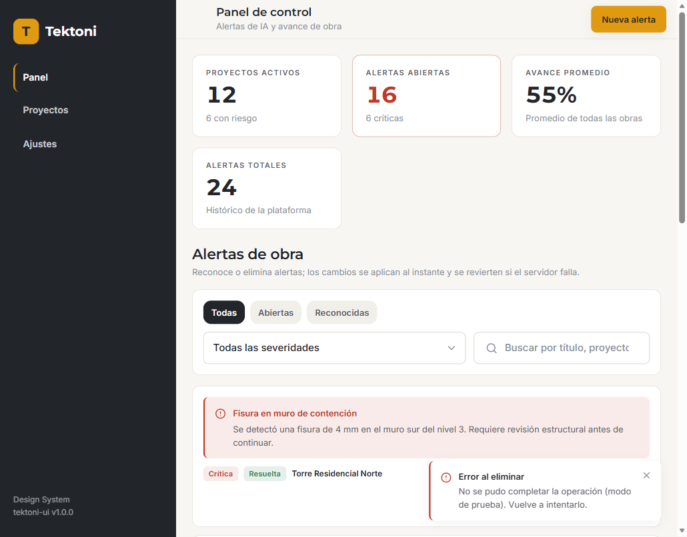
El esquema de Zod es la única fuente de verdad de validación y los tipos se infieren con z.infer:
export const alertFormSchema = z.object({
projectId: z.string().min(1, 'Selecciona un proyecto.'),
severity: z.enum(['critical', 'warning', 'info'], {
errorMap: () => ({ message: 'Selecciona una severidad.' }),
}),
title: z.string().trim().min(5, 'El título debe tener al menos 5 caracteres.')
.max(80, 'El título no puede exceder 80 caracteres.'),
description: z.string().trim().min(10, 'Describe el hallazgo con al menos 10 caracteres.')
.max(280, 'La descripción no puede exceder 280 caracteres.'),
});
export type AlertFormValues = z.infer<typeof alertFormSchema>;useForm({ resolver: zodResolver(alertFormSchema), mode: 'onBlur', defaultValues }).Controller para los componentes de la librería (Input, Select) porque exponen onChange(value); register para el textarea nativo.useWatch solo para el contador de caracteres (evita re-render de todo el formulario).setError('title', …) y setFocus('title'); error general con setError('root', …).loading mientras isPending; reset() tras el éxito.aria-describedby y el campo se marca con aria-invalid.id/htmlFor, errores con role="alert",
texto de ayuda con id propio y foco al primer campo inválido (comportamiento por defecto de RHF).
Las optimizaciones responden a necesidades reales del panel (listas, filtros y tablas):
| Técnica | Dónde y por qué |
|---|---|
useMemo | Objeto filters estable (queryKey sin cambios), opciones de Select y configuraciones de Tabs. |
useCallback | Handlers pasados a tarjetas y filas memorizadas (onAcknowledge, onRequestDelete, paginación). |
useRef | Temporizador del debounce de búsqueda, foco previo del diálogo y temporizador del anunciador; no provocan renders. |
React.memo | AlertCard, ProjectRow, ProjectsTable y KpiCard. |
select de Query | El feed deriva { items, total } de la caché sin recalcular en el componente. |
| División de componentes | Layout, features y UI separados; DevTools en chunk aparte solo en desarrollo. |
| Bundle | manualChunks separa React, Query, Motion y formularios; el chunk principal queda en ~265 KB (82 KB gzip). |
// Debounce con ref (no re-renderiza por el temporizador)
const timer = useRef<number | null>(null);
useEffect(() => {
if (timer.current) window.clearTimeout(timer.current);
timer.current = window.setTimeout(() => setQuery(search.trim()), 320);
return () => { if (timer.current) window.clearTimeout(timer.current); };
}, [search]);
const filters = useMemo<AlertFilters>(
() => ({ status, severity, q: query }),
[status, severity, query],
);
const handleAcknowledge = useCallback((id: string) => acknowledge.mutate(id), [acknowledge.mutate]);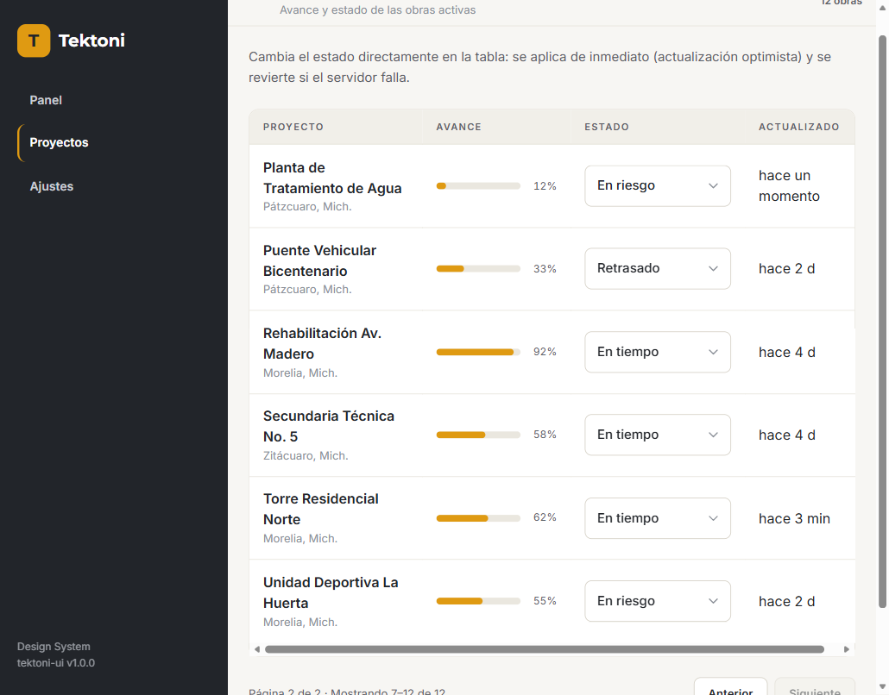
Se usa Motion (framer-motion) para la entrada/salida de las tarjetas del feed y la aparición del diálogo.
Se respeta la preferencia de reducción de movimiento con useReducedMotion(): si está activa,
las transiciones tienen duración 0 y no se animan posiciones.
const reduceMotion = useReducedMotion();
<motion.li
layout={!reduceMotion}
initial={reduceMotion ? false : { opacity: 0, y: 10 }}
animate={{ opacity: 1, y: 0 }}
exit={reduceMotion ? undefined : { opacity: 0, x: 24 }}
transition={{ duration: reduceMotion ? 0 : 0.22, ease: 'easeOut' }}
>
<Alert ... /> {/* componente de la librería */}
</motion.li>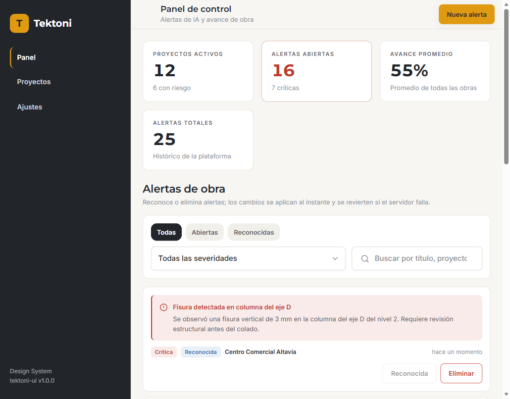
| Requisito | Implementación |
|---|---|
| HTML semántico y landmarks | aside/nav, main, header, footer, table con caption, th scope, time, form/label. |
Un h1 por vista | Cada página renderiza su Navbar con el título principal. |
| Enlace de salto | SkipLink visible al enfocar; salta a #contenido. |
| Nombres accesibles | Botones con aria-label (p. ej. “Reconocer la alerta: …”); iconos decorativos con aria-hidden. |
| Regiones vivas | role="status" para éxito y role="alert" para errores; toasts y mensajes de mutación anunciados sin interacción. |
| Estado de carga | aria-busy en el feed y en formularios; role="status" en cargas. |
| Diálogos | <dialog> nativo: atrapa el foco, cierra con Escape y devuelve el foco al disparador. |
| Formularios | aria-invalid, aria-describedby, errores con role="alert" y foco al primer error. |
| Teclado y foco visible | Orden lógico, :focus-visible con anillo de 2 px y componentes de la librería con anillo propio. |
| Feedback táctil | Objetivos ≥ 44 px (botones de 48 px, enlaces de 44 px), estados hover/active del Design System. |
| Contraste y preferencias | WCAG AA en textos y controles; respeto a prefers-reduced-motion y prefers-contrast. |
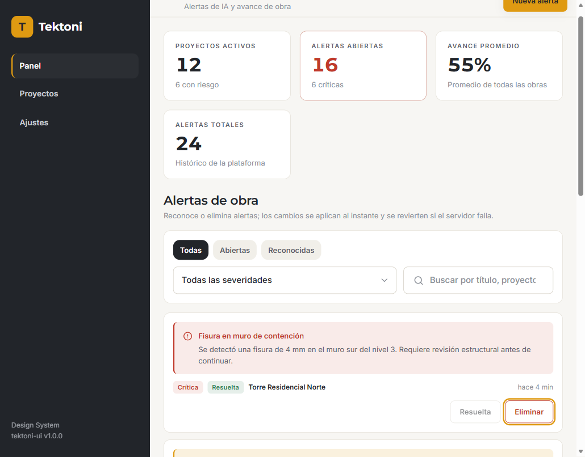
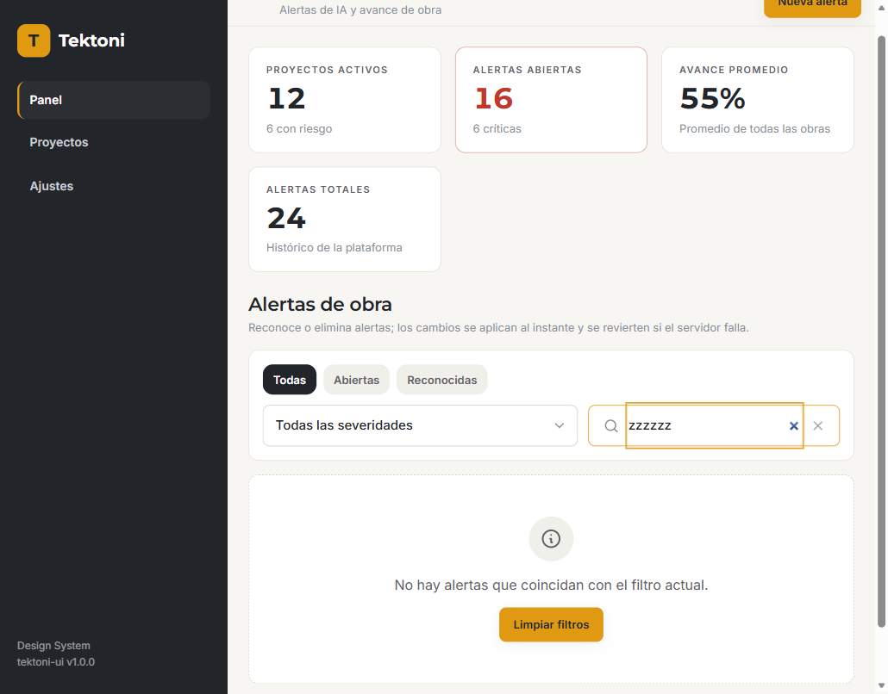
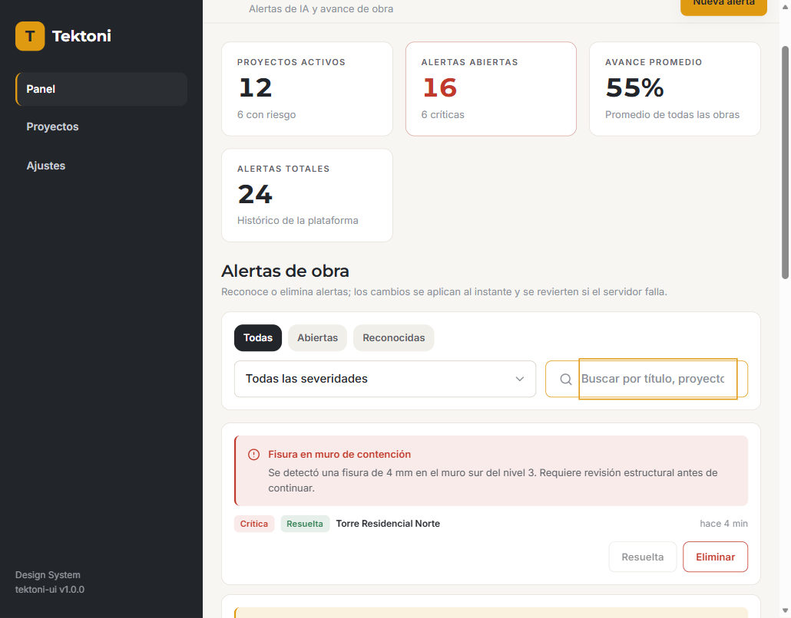
Alert de la librería; la app sigue operando con datos guardados.La app se configuró con vite-plugin-pwa (Workbox, estrategia generateSW):
start_url: /, display: standalone, theme_color: #22252A y background_color: #F7F6F3.navigateFallback a index.html y limpieza de cachés antiguas.localStorage; la app funciona sin red y muestra el aviso correspondiente.beforeinstallprompt y se ofrece un botón “Instalar Tektoni” en Ajustes.theme-color, apple-mobile-web-app-*, viewport con viewport-fit=cover y diseño responsive.VitePWA({
registerType: 'autoUpdate',
manifest: { name: 'Tektoni · Control de Obra', short_name: 'Tektoni',
display: 'standalone', theme_color: '#22252A', background_color: '#F7F6F3',
start_url: '/', icons: [ /* 192, 512, maskable 512 */ ] },
workbox: {
globPatterns: ['**/*.{js,css,html,svg,png,ico,woff,woff2}'],
navigateFallback: '/index.html',
cleanupOutdatedCaches: true,
clientsClaim: true,
},
})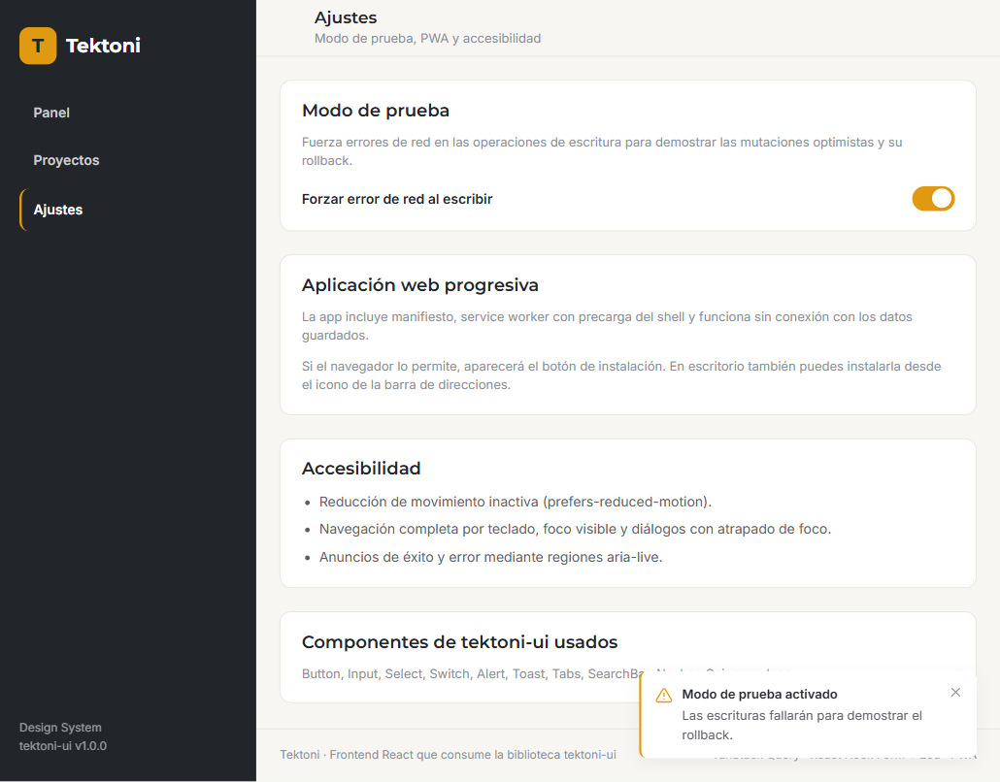
manifest.webmanifest, sw.js y workbox-*.js generados; precache de 21 entradas (583.86 KiB).
Los estados se derivan de TanStack Query (nunca de banderas manuales duplicadas) y se comunican de forma visual y semántica:
| Estado | Componente / comportamiento |
|---|---|
| Carga inicial | StateView con Spinner + role="status"; KPIs con skeleton y aria-busy. |
| Vacío | Mensaje claro + acción “Limpiar filtros” (Figura 10.2). |
| Error de consulta | StateView con botón “Reintentar” que ejecuta refetch(). |
| Éxito de mutación | Toast role="status" + anuncio cortés en la región viva. |
| Error de mutación | Toast role="alert" + anuncio asertivo + rollback de la caché (Figura 6.7). |
| Pending | Botones con loading/disabled, aria-busy y aria-busy en la región del feed. |
| Offline | Aviso con Alert de advertencia (Figura 10.3). |
tsc --noEmit sin errores.vite build correcto; CSS 31.4 KB, chunk principal 265 KB (82 KB gzip) y vendor chunks separados.Tab, foco visible (Figura 10.1), cierre de diálogos con Escape y retorno de foco al disparador.aria-live y anuncios de éxito/error verificados en el árbol de accesibilidad.offline con aviso visible y datos persistidos.npm run build && npm run preview) y documentar el puntaje final del equipo. La app ya cumple los
requisitos técnicos de PWA e incluye las correcciones de accesibilidad descritas.
El proyecto demuestra que la biblioteca tektoni-ui puede consumirse como dependencia externa de npm y sostener una aplicación real: el panel mantiene la identidad visual del Design System (colores, tipografía, espaciado, radios y sombras) mientras aplica buenas prácticas de datos, formularios, rendimiento, accesibilidad y PWA.
Los tres flujos optimistas (crear, actualizar y eliminar) implementan snapshot, rollback e invalidación, y la interfaz nunca queda inconsistente ante un error. La accesibilidad se abordó de forma transversal: semántica, teclado, lectores de pantalla y preferencias del usuario.
# Biblioteca (ya publicada)
npm install tektoni-ui@1.0.0
# Aplicación
npm install
npm run dev # desarrollo (http://127.0.0.1:5199)
npm run build # typecheck + build de producción
npm run preview # sirve dist/ (http://127.0.0.1:4199)
npm run icons # regenera los iconos PWA| Paquete | Versión | Uso |
|---|---|---|
tektoni-ui | ^1.0.0 | Design System (componentes y tokens). |
@tanstack/react-query | ^5 | Estado del servidor, caché, paginación y mutaciones. |
react-hook-form | ^7 | Gestión de formularios. |
zod + @hookform/resolvers | ^3 | Validación y tipos inferidos. |
framer-motion | ^11 | Animaciones accesibles. |
react-router-dom | ^6 | Rutas y navegación accesible. |
vite-plugin-pwa | ^0.21 | Manifiesto y service worker. |
https://www.npmjs.com/package/tektoni-uihttps://github.com/davcamshow/tektoni-webhttps://www.figma.com/design/08k5rOJePmY7Ks3X6HhoMn